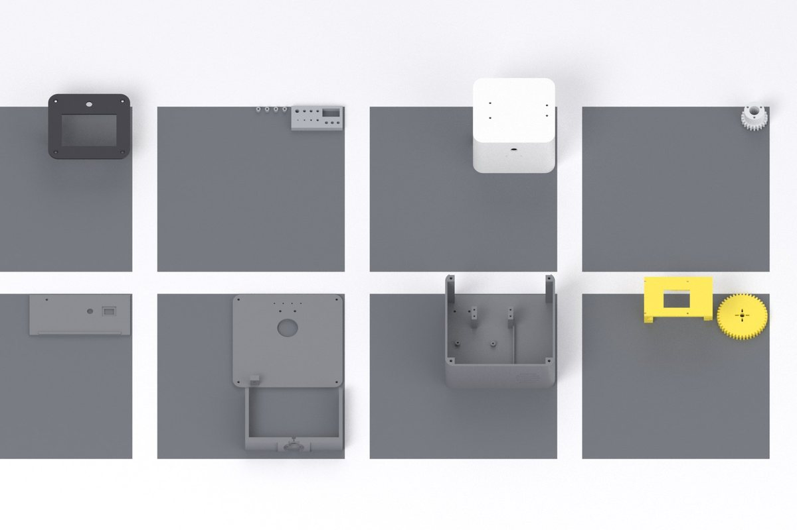

Guía de uso · paso a paso
Descargar, imprimir y ensamblar
Los comandos son los del repositorio. El orden completo de montaje, con cada tornillo, está en PLANO.md (en portugués).
1
Descarga el proyecto
Los archivos de impresión ya están listos en la carpeta pecas/, en STL y 3MF. Si solo quieres imprimir, descarga el ZIP (unos 80 MB), descomprímelo y abre los archivos en el laminador: no necesitas terminal ni Python. Las carpetas componentes/ solo muestran el contorno de las piezas compradas: no las imprimas.
Descargar todo en ZIP
Si vas a cambiar medidas y generar las piezas de nuevo, puedes clonar el repositorio con git desde una terminal:
git clone https://github.com/inematds/robos-impressos.git
cd robos-impressos
ls pecas/dino/stl pecas/capivara/stl pecas/cubo/stl pecas/comum/stl
2
Imprime la pieza de prueba
Imprime la pieza de prueba y un pasador guía (pecas/comum/stl/comum-pino-guia.stl). El dibujo de abajo muestra cada agujero, visto desde arriba. Junto a la ventana del micro servo hay tres agujeros para insertos (3,9, 4,0 y 4,1 mm) y, en la punta, el agujero más grande, para el eje del motor amarillo (el eje debe girar libremente). En la otra fila hay tres alojamientos para el pasador guía (holguras de 0,20, 0,25 y 0,30 mm) y cuatro agujeros para tornillos: M3 que pasa libremente, M3 que hace rosca en el plástico (M3* en el dibujo), M2,5 y M2. El proyecto usa el agujero de 4,0 mm y el alojamiento de 0,25 mm, los del medio, marcados con un hoyuelo (● en el dibujo). El inserto M3 (el casquillo de latón que entra en caliente, con un soldador, y forma una rosca) debe entrar firme; el pasador debe entrar ajustado, sin martillarlo. Si esos dos funcionan, sigue adelante. Si el agujero vecino funciona mejor, ajusta la holgura en cad/parametros.py, en el bloque FOLGA (componente para el servo, encaixe para el pasador, inserto_d para el inserto) y vuelve a generar en el paso 3: solo entonces necesitas Python.
# abre este archivo en el laminador
pecas/comum/stl/comum-teste-encaixe.stl

ver la pieza de prueba en GitHub (botón de descarga en la página)
3
Genera y verifica (solo si cambiaste alguna medida)
El primer comando recrea todas las piezas; el segundo ejecuta las 9 pruebas y termina con un error si alguna falla.
python3 -m venv .venv
.venv/bin/pip install -r requirements.txt
# toma pocos minutos
.venv/bin/python cad/gerar.py todos
.venv/bin/python cad/verificar.py todos
Estos comandos son para Linux y macOS. En Windows, usa python en lugar de python3, dir en lugar de ls, .venv\Scripts\pip en lugar de .venv/bin/pip y .venv\Scripts\python en lugar de .venv/bin/python.
4
Imprime las camas
Cada cama de abajo corresponde a una impresión: las piezas ya están acostadas, agrupadas por color y material, en un archivo 3MF con la geometría (el archivo no incluye configuración de laminado y aún no se abrió en un laminador; si el tuyo no lo abre, usa los archivos STL sueltos de pecas/<modelo>/stl y la tabla). El nombre del archivo es <modelo>-mesa-NN-material-cor.3mf. Punto de partida, aún sin probar: capa de 0,2 mm, boquilla de 0,4 mm, 3 paredes y 15 % de relleno. Las carcasas redondeadas necesitan soporte tipo árbol; el esqueleto se imprime sin soporte, excepto el berco-tilt. La pieza de prueba y los pasadores guía se repiten en la cama gris: si ya los imprimiste, quítalos de la placa. Los colores son solo apariencia: el mínimo es un rollo de PETG para el esqueleto y uno de PLA para la carcasa. En las tablas, mesa-cabeca es el nombre de una pieza (la que sostiene la cabeza por dentro).
# un archivo 3MF por cama de impresión, en cada modelo
pecas/dino/mesas/ pecas/capivara/mesas/ pecas/cubo/mesas/
🦖 Dinosaurio

↔ en el celular, desliza la tabla hacia un lado
| Cama | Material | Color | Pieza |
|---|
| 1 | PETG | amarillo | bandeja-uno, bandeja-pi |
| 2 | PETG | grafito | chassi |
| 3 | PETG | grafito | mesa-cabeca, garfo-pescoco, capa-esfera, berco-tilt |
| 4 | PLA | azul | crista-cabeca, crista-cauda, crista-costas, iris, iris-esq |
| 5 | PLA | blanco | olho, olho-esq |
| 6 | PLA | gris | teste-encaixe, bucha-eixo, pino-guia ×4 |
| 7 | PLA | crema | barriga, unha ×6 |
| 8 | PLA | negro | pupila, pupila-esq |
| 9 | PLA | verde | torso-frente |
| 10 | PLA | verde | torso-costas |
| 11 | PLA | verde | cranio, perna-dir |
| 12 | PLA | verde | perna-esq, cauda, braco-dir, braco-esq, mandibula |
🦫 Carpincho

↔ en el celular, desliza la tabla hacia un lado
| Cama | Material | Color | Pieza |
|---|
| 1 | PETG | amarillo | bandeja-uno, bandeja-pi |
| 2 | PETG | grafito | chassi |
| 3 | PETG | grafito | mesa-cabeca, garfo-pescoco, capa-esfera, berco-tilt |
| 4 | PLA | blanco | olho, olho-esq |
| 5 | PLA | cian | aro ×2 |
| 6 | PLA | gris | teste-encaixe, bucha-eixo, pino-guia ×4 |
| 7 | PLA | naranja | torso-frente |
| 8 | PLA | naranja | torso-costas |
| 9 | PLA | naranja | cranio, coxa-dir |
| 10 | PLA | naranja | coxa-esq, barriga, mandibula, topete |
| 11 | PLA | marrón | rabo, focinho, pata-dir, pata-esq, orelha ×2, mao ×2, iris, iris-esq |
| 12 | PLA | negro | pupila, pupila-esq |
| 13 | PLA | verde | bandana-frente, bandana-costas |
🤖 Robot cuadrado

↔ en el celular, desliza la tabla hacia un lado
| Cama | Material | Color | Pieza |
|---|
| 1 | PETG | amarillo | engrenagem-servo, quadro-cabeca |
| 2 | PETG | grafito | base |
| 3 | PETG | grafito | tampa-base, garfo |
| 4 | PETG | grafito | porta-traseira |
| 5 | PETG | plata | tubo-pescoco |
| 6 | PLA | blanco | cabeca-corpo |
| 7 | PLA | gris | teste-encaixe, espacador-pi ×4 |
| 8 | PLA | negro | cabeca-face |
5
Ensambla uno de los animales
Resumen del orden para el dinosaurio y el carpincho:
- Coloca los insertos M3 en caliente en las piezas.
- Atornilla los dos motores en las paredes del chasis (la pieza oscura grande, que es el esqueleto), desde afuera y con el motor hacia arriba.
- Sujeta la esfera de apoyo con la cubierta, por debajo.
- Monta el servo que gira la cabeza en la parte superior del chasis; luego, la horquilla, el segundo servo y la cuna (las dos piezas del cuello).
- Coloca la batería y las bandejas de las placas por detrás.
- Cierra el torso por delante y solo entonces coloca las ruedas por los lados.
- Panel del vientre, espalda, piernas o muslos, cola.
- Monta la cabeza sobre la mesa (la pieza
mesa-cabeca entra por debajo del cráneo; después van el servo de la boca, la mandíbula y los ojos) y bájala completa sobre el cuello: dos tornillos por arriba, ocultos bajo la cresta. - Las espinas, las uñas, las orejas y el pañuelo se colocan a presión o con pegamento.
6
O monta el robot cuadrado
Resumen del orden:
- Servo en el piso de la base y Arduino al lado; después, el engranaje grande encima del servo.
- Batería por la puerta trasera.
- Tubo del cuello por debajo de la tapa, y la tapa en la base.
- Soporte en forma de horquilla encima del tubo, con tres tornillos largos.
- Raspberry Pi, pantalla y el segundo servo en el marco de la cabeza.
- Carcasa de la cabeza por detrás, marco de la pantalla por delante.
- Cabeza entre los brazos del soporte en forma de horquilla y la puerta trasera.
🦖 Dinosaurio — piezas para imprimir
↔ en el celular, desliza la tabla hacia un lado
| Pieza | Tamaño en la cama (mm) | Cant. | Material | Color | Soportes | Filamento (g)* | Tiempo (h)* |
|---|
| torso-frente | 145 × 226 × 96 | 1 | PLA | verde | sí | 122 | 4.7 |
| torso-costas | 145 × 226 × 74 | 1 | PLA | verde | sí | 136 | 5.2 |
| barriga | 79 × 87 × 26 | 1 | PLA | crema | sí | 24 | 1.0 |
| crista-costas | 47 × 27 × 6 | 1 | PLA | azul | no | 5 | 0.3 |
| pino-guia (común) | 4 × 4 × 9 | 4 | PLA | gris | no | 0 | 0.3 |
| perna-dir | 60 × 127 × 113 | 1 | PLA | verde | no | 55 | 2.1 |
| perna-esq | 60 × 127 × 113 | 1 | PLA | verde | no | 55 | 2.1 |
| unha | 18 × 18 × 13 | 6 | PLA | crema | no | 13 | 1.0 |
| cauda | 92 × 112 × 69 | 1 | PLA | verde | no | 55 | 2.1 |
| crista-cauda | 26 × 38 × 6 | 1 | PLA | azul | no | 4 | 0.2 |
| cranio | 156 × 184 × 120 | 1 | PLA | verde | sí | 187 | 7.1 |
| mandibula | 116 × 59 × 49 | 1 | PLA | verde | sí | 26 | 1.1 |
| mesa-cabeca | 104 × 138 × 36 | 1 | PETG | grafito | no | 41 | 1.6 |
| crista-cabeca | 61 × 83 × 6 | 1 | PLA | azul | no | 7 | 0.4 |
| olho | 48 × 38 × 48 | 1 | PLA | blanco | no | 18 | 0.8 |
| olho-esq | 48 × 38 × 48 | 1 | PLA | blanco | no | 18 | 0.8 |
| iris | 29 × 19 × 29 | 1 | PLA | azul | no | 5 | 0.3 |
| iris-esq | 29 × 19 × 29 | 1 | PLA | azul | no | 5 | 0.3 |
| pupila | 17 × 13 × 18 | 1 | PLA | negro | no | 2 | 0.1 |
| pupila-esq | 17 × 13 × 18 | 1 | PLA | negro | no | 2 | 0.1 |
| bucha-eixo (común) | 7 × 7 × 3 | 1 | PLA | gris | no | 0 | 0.1 |
| braco-dir | 38 × 73 × 31 | 1 | PLA | verde | sí | 16 | 0.7 |
| braco-esq | 38 × 73 × 31 | 1 | PLA | verde | sí | 16 | 0.7 |
| chassi (común) | 152 × 190 × 148 | 1 | PETG | grafito | no | 206 | 7.6 |
| capa-esfera (común) | 29 × 29 × 6 | 1 | PETG | grafito | no | 3 | 0.2 |
| bandeja-uno (común) | 61 × 90 × 16 | 1 | PETG | amarillo | no | 19 | 0.8 |
| bandeja-pi (común) | 61 × 90 × 16 | 1 | PETG | amarillo | no | 16 | 0.7 |
| garfo-pescoco (común) | 65 × 48 × 51 | 1 | PETG | grafito | no | 17 | 0.7 |
| berco-tilt (común) | 38 × 23 × 77 | 1 | PETG | grafito | sí | 15 | 0.6 |
| teste-encaixe (común) | 70 × 34 × 8 | 1 | PLA | gris | no | 15 | 0.6 |
| Total | | 38 | | | | 1107 | 44 |
* estimación por volumen, sin laminador
🦫 Carpincho — piezas para imprimir
↔ en el celular, desliza la tabla hacia un lado
| Pieza | Tamaño en la cama (mm) | Cant. | Material | Color | Soportes | Filamento (g)* | Tiempo (h)* |
|---|
| torso-frente | 156 × 226 × 96 | 1 | PLA | naranja | sí | 133 | 5.0 |
| torso-costas | 156 × 226 × 74 | 1 | PLA | naranja | sí | 139 | 5.3 |
| barriga | 79 × 87 × 29 | 1 | PLA | naranja | sí | 26 | 1.1 |
| bandana-frente | 119 × 47 × 60 | 1 | PLA | verde | sí | 9 | 0.4 |
| bandana-costas | 119 × 38 × 67 | 1 | PLA | verde | sí | 10 | 0.5 |
| mao | 20 × 20 × 11 | 2 | PLA | marrón | no | 5 | 0.3 |
| pino-guia (común) | 4 × 4 × 9 | 4 | PLA | gris | no | 0 | 0.3 |
| coxa-dir | 46 × 119 × 82 | 1 | PLA | naranja | sí | 37 | 1.5 |
| coxa-esq | 46 × 119 × 82 | 1 | PLA | naranja | sí | 37 | 1.5 |
| aro | 40 × 40 × 3 | 2 | PLA | cian | no | 4 | 0.3 |
| pata-dir | 44 × 37 × 25 | 1 | PLA | marrón | no | 10 | 0.5 |
| pata-esq | 44 × 37 × 25 | 1 | PLA | marrón | no | 10 | 0.5 |
| rabo | 84 × 72 × 50 | 1 | PLA | marrón | sí | 34 | 1.4 |
| cranio | 160 × 185 × 114 | 1 | PLA | naranja | sí | 179 | 6.8 |
| mandibula | 119 × 58 × 44 | 1 | PLA | naranja | sí | 21 | 0.8 |
| focinho | 79 × 41 × 40 | 1 | PLA | marrón | sí | 12 | 0.5 |
| mesa-cabeca | 98 × 140 × 33 | 1 | PETG | grafito | no | 40 | 1.5 |
| orelha | 28 × 28 × 15 | 2 | PLA | marrón | no | 9 | 0.5 |
| topete | 16 × 26 × 6 | 1 | PLA | naranja | no | 2 | 0.2 |
| olho | 42 × 29 × 42 | 1 | PLA | blanco | no | 13 | 0.6 |
| olho-esq | 42 × 29 × 42 | 1 | PLA | blanco | no | 13 | 0.6 |
| iris | 30 × 15 × 30 | 1 | PLA | marrón | no | 5 | 0.2 |
| iris-esq | 30 × 15 × 30 | 1 | PLA | marrón | no | 5 | 0.2 |
| pupila | 21 × 11 × 21 | 1 | PLA | negro | no | 2 | 0.2 |
| pupila-esq | 21 × 11 × 21 | 1 | PLA | negro | no | 2 | 0.2 |
| bucha-eixo (común) | 7 × 7 × 3 | 1 | PLA | gris | no | 0 | 0.1 |
| chassi (común) | 152 × 190 × 148 | 1 | PETG | grafito | no | 206 | 7.6 |
| capa-esfera (común) | 29 × 29 × 6 | 1 | PETG | grafito | no | 3 | 0.2 |
| bandeja-uno (común) | 61 × 90 × 16 | 1 | PETG | amarillo | no | 19 | 0.8 |
| bandeja-pi (común) | 61 × 90 × 16 | 1 | PETG | amarillo | no | 16 | 0.7 |
| garfo-pescoco (común) | 65 × 48 × 51 | 1 | PETG | grafito | no | 17 | 0.7 |
| berco-tilt (común) | 38 × 23 × 77 | 1 | PETG | grafito | sí | 15 | 0.6 |
| teste-encaixe (común) | 70 × 34 × 8 | 1 | PLA | gris | no | 15 | 0.6 |
| Total | | 39 | | | | 1049 | 42 |
* estimación por volumen, sin laminador
🤖 Robot cuadrado — piezas para imprimir
↔ en el celular, desliza la tabla hacia un lado
| Pieza | Tamaño en la cama (mm) | Cant. | Material | Color | Soportes | Filamento (g)* | Tiempo (h)* |
|---|
| base | 150 × 144 × 66 | 1 | PETG | grafito | no | 220 | 8.1 |
| tampa-base | 150 × 144 × 18 | 1 | PETG | grafito | no | 94 | 3.5 |
| porta-traseira | 137 × 62 × 5 | 1 | PETG | grafito | no | 32 | 1.3 |
| tubo-pescoco | 36 × 36 × 28 | 1 | PETG | plata | no | 15 | 0.6 |
| engrenagem-servo | 69 × 69 × 8 | 1 | PETG | amarillo | no | 23 | 0.9 |
| garfo | 133 × 92 × 24 | 1 | PETG | grafito | no | 40 | 1.6 |
| quadro-cabeca | 94 × 60 × 55 | 1 | PETG | amarillo | no | 30 | 1.2 |
| cabeca-corpo | 112 × 100 × 89 | 1 | PLA | blanco | no | 135 | 5.1 |
| cabeca-face | 112 × 100 × 43 | 1 | PLA | negro | no | 34 | 1.3 |
| espacador-pi | 6 × 6 × 5 | 4 | PLA | gris | no | 0 | 0.3 |
| teste-encaixe (común) | 70 × 34 × 8 | 1 | PLA | gris | no | 15 | 0.6 |
| Total | | 14 | | | | 638 | 25 |
* estimación por volumen, sin laminador
Lista de compras
↔ en el celular, arrastra la tabla hacia un lado
| Artículo | Dinosaurio | Carpincho | Robot cuadrado |
|---|
| Servo estándar MG996R | 2 | 2 | 2 |
| Microservo SG90 o MG90S | 3 | 1 | — |
| Motor TT amarillo 1:48 con rueda de 65 mm | 2 | 2 | — |
| Esfera de acero de 16 mm | 1 | 1 | — |
| Soporte para 2 baterías 18650, con las baterías | 1 | 1 | 1 |
| Interruptor basculante pequeño (KCD11) | 1 | 1 | 1 |
| Raspberry Pi 4 o 5 | opcional | opcional | 1 |
| Pantalla de 3,5 pulgadas para Raspberry Pi, modelo MPI3501 (encaja en los pines de la placa; una pantalla HDMI no sirve) | — | — | 1 |
| Controlador de motor L298N | 1 | 1 | — |
| Insertos M3 en caliente | 25 | 25 | 14 |
| Tornillos, tuercas y arandelas M3 (y algunos M2,5) | kit | kit | kit |
| Arduino Uno con shield de servos | opcional | opcional | opcional |
| 4 patas de goma adhesivas | — | — | 4 |
En la fase 1 nada se conecta: Arduino y Raspberry Pi solo sirven para verificar el ajuste, por eso son opcionales (en el robot cuadrado, Raspberry Pi sostiene la pantalla). Tornillos fuera del kit común: para los animales, 2 M3×12 de cabeza plana y 4 M2,5×8; para el robot cuadrado, 3 M3×35, 8 M3×12 de cabeza plana y 4 M2,5×12. La lista completa está en PLANO.md (en portugués), sección 3, y la cantidad por etapa en la sección 6.
Costo estimado de los componentes, incluido Arduino y el shield, sin la impresora ni el filamento: R$ 330 a 560 por animal. Para el robot cuadrado, R$ 260 a 430 más Raspberry Pi y la pantalla, que son obligatorios en ese modelo (costo adicional estimado de R$ 490 a 850). Precios de tiendas brasileñas en noviembre de 2026; es una estimación.
Herramientas: soldador (para los insertos), destornillador Phillips pequeño, llave Allen de 2,5 mm, calibrador (para medir tus componentes) y pegamento instantáneo.
Ten cuidado con las pilas 18650: son de litio. Usa un soporte y un cargador adecuados, no dejes que los polos entren en contacto con metal y no las cargues sin supervisión, especialmente si hay niños cerca.